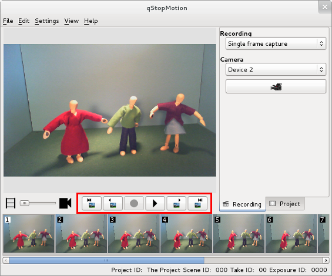

4. Running/previewing the animation
Now that you have added some test pictures to your animations wouldn't you like to run them as an animation?
qStopMotion allows you to preview your animation before exporting it. This can be done through the play panel.
Figure 4.1 The Run Animation menu

The play panel allows you to play ( (K)) and stop () the running of the animation. You can also move between frames ( (J), (L)) and to fist or last frame ( (I), (O)).
(K)) and stop () the running of the animation. You can also move between frames ( (J), (L)) and to fist or last frame ( (I), (O)).
| The camera has to be off to use this menu. |